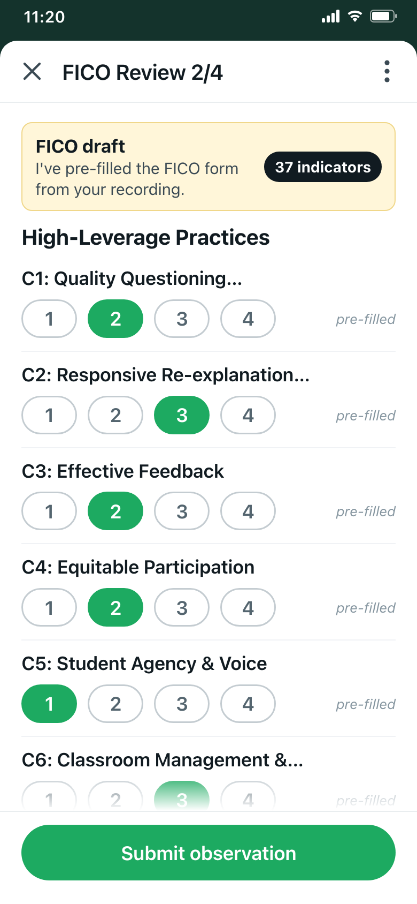
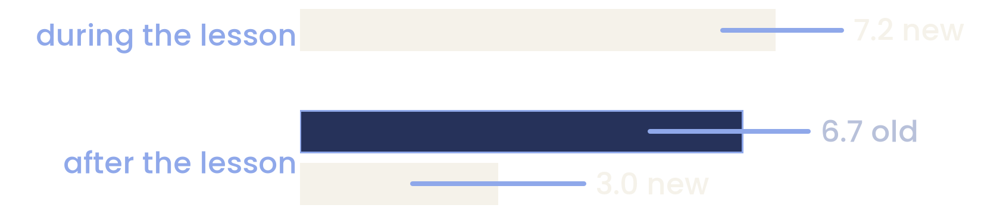
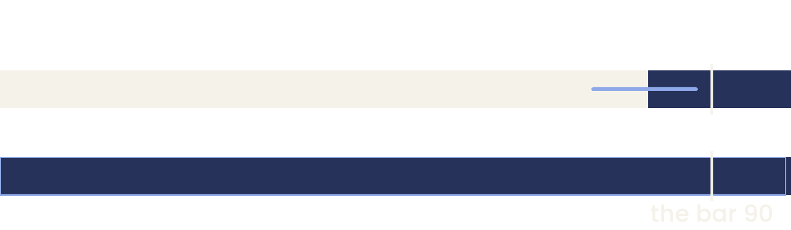
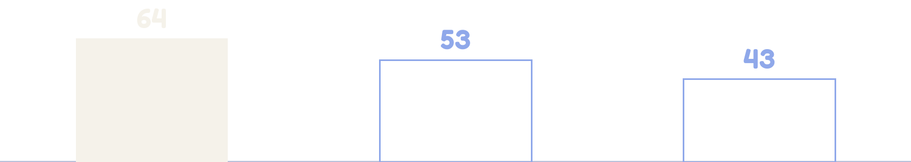

Same lesson.
Same score.
whoever observes, however they observe
120 teachers
observed with the new form, 5 to 24 October
each gets a level on 17 rows; it should not depend on who observed
The form arrived filled in

The old form: 37 rows, every level already chosena mock-up, drawn from how the form worked
Rumi filled it in.
The coach reviewed it and sent it.
What coaches did with it
86 in 100
pre-filled scores left as they were
old form, all coaches · 2,288 forms
41 in 100
forms sent back within five minutes
the same forms · 29 Aug to 27 Sep
about 4
points out of 100 above the pre-fill
the final score, on average · median +1.5
Same lesson.
Same score.
Never was.
What the planning calls decided
“I worry less about IRR between … coach and AI. I worry more about, like, the IRR between coaches.”
“They should just capture the evidence. That is their job while doing the observation.”
So we decided four things
- 1Evidence first, taken during the lesson
- 2A form in two parts
- 3Counts written as numbers, not ranges
- 417 rows, with no codes on screen
23 to 29 September: the blank form, the 17 rows, then the form itself
The new form in four screens


Part 1: counts
During the lesson, typed by hand, such as how many children spoke
Part 2: ticks
What the coach can see, in plain words, with no codes
The seal
What to work on first; then the record is locked
Rumi's moments
Only after the seal: a quote, the minute, yes or no
The pilot by numbers
12
coaches kept using the new form
the pilot coaches · 5 to 24 October
240
visits, 223 of them by the 12
25 accounts in all · 120 teachers
15
pairs checked the same lesson; 13 filled apart
two coaches, one lesson, a form each
From 22 October a fallback model most likely took over. 25 of 26 recorded visits since still have Rumi's moments.
Three blind reads of every lesson
187 recorded lessons, each read three times, blind to the coach's levels
AI readers standing in for the plan's reference coaches, who never scored
No coach's level leaked: 0 in 1,851 strings · 1,816 of 1,817 quotes found
The rules we set first
-
1
“Scores land within one level of each other at least 80% of the time”
chance: two unrelated lessons, 81 in 100 (76 to 85)
-
2
“the coaching priority matches at least 70% of the time”
-
3
“At least 90% of [the self-serve coach’s] evidence items are correct, and fewer than 5% of the items coaches accept turn out to be wrong”
-
4
“… [the self-serve coach] can score it in at least 4 of every 5 lessons …”
From the pilot plan, September 2026, written before any result
Two coaches, one lesson
Part 1 of the form: same lesson, same 53 children. · V213, V227
One lesson: one coach typed 47 children spoke, the other 20.
Two coaches agree beyond chance: a kappa of 0.43
13 pairs · 212 levels · 95% interval 0.32 to 0.55
By kind of row: what they counted came out highest.
Against chance 0.23, only what they counted clears it · 13 pairs · 95% intervals
Not shown above the bar of 0.40: the range runs 0.32 to 0.55, on 13 pairs; the plan asks 15.
The same thing to work on first: 6 of 13
13 pairs · 46 in 100 · 95% interval 23 to 77 · no chance figure yet
Closer than chance: 0.43. The same first step: 6 of 13.
13 pairs; the plan asked for 15
Same lesson.
Same score.
Not yet.
Next read: 15 pairs on two phones, about 6 November.
What a recording can judge
For most rows, neither a recording nor a second coach is shown to agree beyond chance yet.
what a coach sees A raised hand makes no sound.From a recording alone, today: 0 of 17 rows.
- recording 0
- photos 0
- room 12
- not reliably 4
- not yet 1
- C1the teacher's questions164
- D1reasoning162
- D2how many spoke129
- D4trying when unsure120
- F1accuracy159
- C2wrong answers140
- C3who answers140
- C4choices158
- C5switching120
- C6safe to be wrong165
- C7group work162
- C8materials165
- D3answer each other57
- D5children's questions160
- F2subject words164
- F3explaining why149
- F4links to life152
At right: visits an AI reader scored blind, standing in for the plan's reference coaches. No person has checked them yet.
Photos as coaches took them: not shown (+0.6 in 100, −0.4 to +1.6; 131 visits). A photo we ask for: never tried.
AI readers stand in for reference coaches; no person has checked them yet. Nearest: group work, kappa 0.38, bar 0.40.
Same lesson.
Same score.
Not yet.
Next read: the 40-visit re-measure, about a week after the fixes ship.
The rubric: three changes
one lesson, V031
تھری ٹو اسٹارٹ؟
[teacher] Three twos?
سکس۔
[children] Six.
about 60 of 75 questions answered in chorus
How many children spoke
We count children who answered alone.
65 of 166
visits fall a level
39 in 100 · 95% interval 31 to 47 · no change in teaching
one lesson, V198
فیکٹ ہے۔
[child] It's a fact.
فیکٹ ہے؟ کیسے؟
[teacher] A fact? How?
جی، اس کے آگے وہ آ رہا ہے پلینٹ۔
[child] Yes, next to it comes "planet".
The teacher's questions
The teacher asks how; one child explains.
One missing line in the code: a placeholder level on 51 in 100 visits
95% interval 43 to 59 · 166 visits · 27 in 100 once the line is added
Accuracy
Coaches reported a content error on 0 of 166 visits; two blind readers found real errors in two lessons.
A reader flags the minute; a person listens.
level 3 on 84 in 100 visits
What a teacher is told
Last month's lessons are scored both ways, side by side, before any teacher sees a new level.
Time, and the funnel
the 12 coaches who kept using the form
the 19 coaches who tried it on day one
With the phone during the lesson: about 7 minutes, new.
After it: about 4 minutes less.

lines: 95% intervals · all told 6.7 to 11.0; 8.4 from the 16th form on

81.9 in 100 sealed forms got a lesson recording
99.3 in 100 recorded lessons were checked
145 of 177, outage days left out · 95% interval 75.0 to 88.0 · the gap is in the product
On day one, 19 coaches tried it; 7 kept it.
12 went back after one to five forms; none of theirs reached the check
Visits a coach-week
8.8 before, 9.1 during: +0.3 (−2.1 to +2.9).
A fall is not shown.
the lower bound is a 24 in 100 fall
Same lesson.
Same score.
Not yet.
Next read: the second cohort's seven bars, two weeks.
What the self-serve coach may score
From a recording alone, today: 0 of 17 rows.
Today's self-serve coach: 37 rows; anything it does not see scores 1.
9 in 100 of its scores are a 1
9.1 in 100 · 826 sessions, 1 Sep to 23 Oct
one row is a 1 on 97 in 100
One lesson, three scores
V146 · the old score's own noise: 4.6 points between sessions

self-serve coach,
old 37 rows
a blind reader,
the 9-row set
coach in the room,
the 9-row set
37 rows against 9; the coach's read was not blind.
Rows it may score from a recording today: 0 of 17.
- count, with a fixed rule
- mark what it cannot see as not observed
- switch a row on only after a re-measure
Run Rumi twice on one lesson: 41 in 100 moments come back (both prompts pooled)
Same lesson.
Same score.
Not yet.
Next read: the shadow run, two weeks, then the re-measure.
Six decisions
how sure
- aAgreement: Not enough yet.15 pairs on two phones, about 6 Nov.medium
- bCan be judged: Yes-if a person checks accuracy.medium
- cThe rubric: Yes-if 40 visits confirm it.And no teacher sees a new level before the 166 are rescored side by side.medium
- dEvery coach: Yes-if, staged.Fixes; then the 12 who went back, two weeks, seven bars.mediumlow for the next 43
- eSelf-serve coach: Yes-if it runs in shadow first.medium
- +Why we switched: The story, told.high
What happens Monday
Monday · a coach trainer outside the pilot, blind to every level
74 of Rumi's moments, then six lessons. One sitting.
Product engineers and the engineering lead
Fixes first: a failed recording can finish, round 7 live, the gateway back, the debrief guard, the plan picker, the C1 rule.
ICT programme lead
The 12 who tried it on day one and went back: two weeks, seven bars; then the other 31.
Uptake under 80 in 100 in week 2, or recording to checked under 95 in 100: extend the pilot.
The standards and evals team
The new wording on 40 visits; six photo asks on 20 visits each, two weeks.
For the teacher observed next week: no new level until the 166 checked visits are rescored side by side.
Next read
- Two coaches agree15 pairs on two phones, about 6 November.
- What a recording can judgethe 40-visit re-measure, about a week after the fixes ship.
- All coachesthe second cohort's seven bars, two weeks.
- The self-serve coachthe shadow run, two weeks, then the re-measure.
Same lesson.
Same score.
Here is the bar. Here is what gets us there.
For the teacher observed next week: no new level until the 166 checked visits are rescored side by side.
Questions.
Every number's source
1 of 4
N
The figure, as carried
Lane, script
n
N1
86 in 100 pre-fills left alone
history E3; recount
2,288 forms
N2
41 in 100 sent inside 5 minutes
history E3; recount
2,288 forms
N3
about +4 points (note 03: +5.2)
facts n1_n3_recount
2,288 forms
N4
the 12: 223 of 240 visits
data; visits.csv
107 of 120
N5
15 pairs checked; 13 filled apart
psych-3 E1; x-psy
15 pairs
N6
0.43 (0.32 to 0.55) vs chance 0.23
psych-3 r3_pair
13 pairs
N7
counts 0.52 · moments 0.36 · picks 0.08
facts f1_by_kind_13
13 pairs
N8
0 · 0 · room 12 · cannot 4 · not yet 1
x-obs-2 m6; R7, R8
17 rows
N9
C7 0.38 (0.23 to 0.51); +12 points
psych-3 r3_chance
162 visits
Checked by facts (FACTS.md v1.2); lines not re-run are named there.
2 of 4
N
The figure, as carried
Lane, script
n
N10
readers 0.78 to 0.87; coach 0.30
psych-2 p1_agree
149 to 163
N11
photos: not shown, +0.6 in 100
psych-2 p2_photo
131 visits
N12
D2: 65 of 166 visits fall a level
x-obs-2 m9_d2
92 teachers
N13
C1 placeholder 51 in 100 (27 if fixed)
x-obs m4_rule_port
166 visits
N14
F1: 0 errors reported in 166; 84% at 3
recount; x-obs
166 visits
N15
7.2 min during; after 6.7, now 3.0
ops-2 11_ops2
12 coaches
N16
81.9% recorded; 99.3% of 145 checked
ops-2 11_ops2
177 sealed
N17
19 tried, 7 kept, 12 went back
ops-2 §1
19 coaches
Most lines describe the 12 coaches who kept using the form; FACTS.md names each population.
3 of 4
N
The figure, as carried
Lane, script
n
N18
visits a week +0.3 (−2.1 to +2.9)
ops-2 11_ops2
12 coaches
N19
89.7 labelled right; 9.9 called wrong
psych-3 r3_human
408; 372
N20
old set: 9.1 in 100 scores are 1
x-ai s1_today
826 sessions
N21
from a recording today: 0 of 17
x-obs-2 MATRIX §2
17 rows
N22
64 old 37 rows; 53 and 43 on 9 rows
x-ai s3_sim
1 lesson
N23
+0.5 (−4.0 to +4.2); noise 4.6
x-ai s3_sim
13 lessons
N24
41 in 100 recur, prompts pooled
x-ai s4_retest
18 pairs
N25
25 of 26 kept moments after 22 Oct
data; visits.csv
26 visits
Lane paths are under outputs/lanes/; scripts sit in each lane's scripts/ folder.
4 of 4
N
The figure, as carried
Lane, script
n
N26
3 debriefs; 18 of 158 plans off
data-2; facts n26
158 plans
N27
the CEO's "about 90%" (3 Sep)
history QUOTES
22 lessons
N28
15 pairs about 6 Nov; 30 by 9 Nov
x-psy x5_power
7.6 pairs/wk
N29
0 leaks in 1,851; 1,816 of 1,817
psych-2 p0; adj-mo
187 packets
N30
"why" empty: 92 in 100 (86 to 96)
psych s4_coach_rumi
84 visits
N31
the plan's four rules, verbatim
plan §2, §4, §6
4 rules
N32
47 of 53 spoke against 20
truth V213, V227
1 pair
N33
about 60 of 75 questions in chorus
x-edu §4 (1 reader)
1 lesson
Full path, script, n and interval for each line: FACTS.md §1 and §2.
How the blind reads worked
1 of 2
Protocol v1.1 (24 Oct), tried first on 3 packets by the 3 transcript readers
Reader
Reads
Model
Visits
T1
the transcript
Opus
187 visits
T2
the transcript
Sonnet
187 visits
TP
the transcript and photos
Opus
187 visits (132 with photos)
MO
Rumi's moments, checked
Opus
187 visits, 1,817 moments
Calibration, 3 packets: exact agreement 75% to 90% per reader pair.
2 of 2
What was checked, and what no reader ever saw
- Leak check: 0 hits for 1,851 answer-key strings in 187 packets
- Timing check: 99 files stamped under 2 minutes on long recordings (11 T1, 1 T2, 87 MO); read as an artefact, not a leak
- Quotes: 1,816 of 1,817 of Rumi's moments found in the transcript
- Never seen by a reader: the coach's levels, Rumi's levels, the coach's check
- The recording readers agree with each other: kappa 0.78 to 0.87 (163 lessons)
- With the coach in the room: 0.30 (0.26 to 0.34), 149 lessons, 2,466 levels
Readers agreeing is not a claim that they are right; no person has read a packet against them yet.
The rules we set first, and the changes
1 of 3
Registered 24 Oct, 17:15Z
The rule, before any result
a · Do coaches agree?
Within one 80% (chance is 81%); first pick 70%; coach share below the old
b · What can a recording judge?
"… [the self-serve coach] can score it in at least 4 of every 5 lessons …"
c · A final rubric?
All 17 drafted, each change citing evidence; no fairness block
d · Roll out to all?
Six conditions: time, completion 85%, moments safe, agreement, defects, load
e · Upgrade the self-serve coach?
The core five scored or asked by photo; the score shift reported
Not edited after results: each change is dated, on the next two pages.
2 of 3
Changed after the results (24 Oct)
Why
R2
"Agrees well" needs 10 points over chance and kappa 0.40
Two unrelated lessons land within one level 81 in 100
R3
Pairs sealed seconds apart set aside: 13 pairs, not 15
The plan's own flag fired on 2 pairs
R4
Coach share: 0% (0 to 16) new, 7% (2 to 11) old
Closed partnerships: the share measures caseload
R6
The moments rule reads "not shown either way"
Two readers agree 88 in 100: 4% and 10% look alike
R7
D2, F1 and C1 moved cells
D2 the count; C1 a code rule; F1 no channel alone
Every change on this page and the next was made after the results were seen.
3 of 3
Changed after the results (24 Oct)
Why
R8
"Cannot be judged reliably": readers' kappa under 0.40
The 70% line cannot fire: chance is 76% to 100%
R9
A photo gain counts only if its interval excludes 0
A gain of 1.6 (0.0 to 4.1) passed the old test
R10
Added: a second cohort, the 12 who went back
The 12 who kept using the form: 7 of 19 on day one
R11
Time is two numbers: during and after the lesson
One number adds a new step to an old one
R16
Question e is "yes-if"; no row scored for teachers
The old 37 score absence as 1
Only D4 trips R8 (kappa 0.37, 0.16 to 0.55). R16 reads the plan; listed, not a deviation.
The matrix in full: all 17 rows
1 of 5
Cell, as ruled
Rows
Count
from the recording
none
0
from photos
none
0
needs the room
C2, C3, C4, C5, C6, C7, C8, D3, D5, F2, F3, F4
12
cannot be judged reliably
C1, D1, D2, D4
4
not enough yet
F1
1
- J: the reader gave a level, in 100. B: coach minus reader, in levels.
- Within one level (chance): N two readers, H two coaches, A coach and reader.
- G: photo gain in 100 reads, 131 visits; none makes a row "from photos" (R9).
Ruled after results: D2, F1 (R7) and D4 (R8). C1 is a fault in the rule.
2 of 5
Row
Cell
Kappa (95%)
C1 questions
not reliably
0.12 (0.03 to 0.21)
C2 wrong answers
room
0.15 (0.02 to 0.28)
C3 who answers
room
0.04 (−0.09 to 0.17)
C4 choices
room
0.22 (0.08 to 0.37)
C5 switching
room
0.23 (0.07 to 0.38)
C6 safe to be wrong
room
0.27 (0.12 to 0.42)
C7 group work
room
0.38 (0.23 to 0.51)
C8 materials
room
0.21 (0.10 to 0.31)
D1 reasoning
not reliably
0.24 (0.07 to 0.37)
Yellow: chance. Black: the bar, 0.40. Hollow not shown above chance.
3 of 5
Row
Cell
Kappa (95%)
D2 how many spoke
not reliably
0.08 (−0.03 to 0.21)
D3 answer each other
room
0.44 (0.24 to 0.62)
D4 trying when unsure
not reliably
0.10 (−0.10 to 0.27)
D5 children's questions
room
0.26 (0.11 to 0.40)
F1 accuracy
not yet
−0.01 (−0.08 to 0.06)
F2 subject words
room
0.15 (−0.01 to 0.29)
F3 explaining why
room
0.20 (0.07 to 0.32)
F4 links to life
room
0.31 (0.15 to 0.46)
D3: room by the clause; a level on 4 visits in 10, so 57 visits only.
4 of 5
Row
J
N
H
A
B
G
n
Was
C1
99
99 (86)
88 (79)
78 (74)
−0.79
+0.8
164 / 148
same
C2
97
99 (79)
88 (79)
84 (81)
−0.46
−0.8
140 / 127
same
C3
86
99 (91)
92 (81)
80 (77)
+0.44
+0.0
140 / 126
clause
C4
97
100 (84)
88 (79)
72 (66)
+0.21
+0.0
158 / 143
same
C5
79
100 (100)
92 (81)
98 (96)
+0.21
+2.3
120 / 106
same
C6
99
99 (98)
88 (79)
99 (98)
−0.09
+0.0
165 / 149
same
C7
97
98 (77)
92 (81)
85 (73)
+0.01
−1.5
162 / 146
same
C8
99
100 (100)
92 (81)
98 (94)
+0.39
+0.8
165 / 149
same
D1
97
99 (95)
88 (79)
94 (89)
−0.11
−0.8
162 / 146
same
N, H, A: within one level, chance in brackets (R2). n: visits / lessons.
5 of 5
Row
J
N
H
A
B
G
n
Was
D2
78
99 (84)
92 (81)
58 (57)
+1.12
+5.3
129 / 114
was room
D3
40
100 (81)
92 (81)
91 (79)
+0.28
−2.3
57 / 55
clause
D4
84
91 (84)
88 (79)
92 (89)
+0.11
+7.6
120 / 106
was room
D5
97
99 (93)
88 (79)
92 (87)
−0.14
−0.8
160 / 144
same
F1
96
96 (77)
88 (84)
72 (72)
+0.82
+0.8
159 / 144
was room
F2
99
95 (83)
88 (84)
90 (85)
−0.07
+0.0
164 / 148
same
F3
99
100 (98)
88 (84)
87 (82)
−0.28
−0.8
149 / 136
same
F4
99
98 (76)
88 (84)
88 (77)
−0.43
+0.0
152 / 136
same
H: the 13 pairs filled apart, by kind: seen 92 (81), heard 88 (79), picked 88 (84).
The coaches' rubric: all 17 rows
1 of 6
Row
Cell
Decision
Who scores
C1 questions
not reliably
Fix the rule; relabel level 2
Rule; coach confirms
Placeholder on 51% (43 to 59); fix leaves kappa 0.25 (0.12 to 0.38)
C2 wrong answers
room
Relabel; fix the rule
Rule; coach confirms
The fix narrows the gap with readers (−0.88 to −0.36); kappa stays 0.15
C3 who answers
room
Reword; coach only
Coach
Coach 0.52 levels above the photo reader (0.34 to 0.72)
Within-one figures carry chance beside them. Teachers hear what changed in plain words.
2 of 6
Row
Cell
Decision
Who scores
C4 choices
room
Reword; coach only
Coach picks
Level 4 on 40% of 86 visits before 16 Oct, 8% of 80 after
C5 switching
room
Reword (drop the clock); coach only
Coach
Within one 98% (chance 96%); 70% of coach levels at 3
C6 safe to be wrong
room
Reword level 2; Urdu praise list
Rule; coach confirms
81% of coach levels are 2; kappa 0.27 (0.12 to 0.42)
C7 is first in line for the 40-visit re-measure; no row is scored for teachers yet.
3 of 6
Row
Cell
Decision
Who scores
C7 group work
room
Reword (a bench pair is 3)
Coach confirms
12 points over chance, kappa 0.38 (0.23 to 0.51); first in line
C8 materials
room
Reword (restore the link)
Coach
Coach gave 3 on 71%; photos cited on 96% of reads; a gain not shown
D1 reasoning
not reliably
Reword; recited reasons out
Rule; coach confirms
Placeholder on 37% (29 to 45); a reader hears one reasoning child in 35 of 100
D1 and D2 cannot be judged reliably as worded; both are reworded.
4 of 6
Row
Cell
Decision
Who scores
D2 how many spoke
not reliably
Count children who answered alone; coach only
Coach
Level 4 on 78% (71 to 85); whole class typed on 24 of 197 forms
D3 answer each other
room
Reword; N/A unless a peer task; coach only
Coach
A level on 40% of visits: peer talk is off the microphone
D4 trying when unsure
not reliably
Reword (Urdu hedges); coach only
Coach
Two readers of one recording kappa 0.37 (0.16 to 0.55)
D2 on the new count: 65 of 166 visits fall a level (31 to 47 in 100), with no change in teaching.
5 of 6
Row
Cell
Decision
Who scores
D5 children's questions
room
Keep; fix the rule
Rule; coach confirms
Kappa 0.26 (0.11 to 0.40); a content question in 13% of lessons
F1 accuracy
not yet
New step: flag a minute, a person listens
Coach, from a flag
Coaches reported 0 content errors on 166 visits; level 3 on 84%
F2 subject words
room
Reword level 2 (mixed-up terms)
Coach picks
Two recording readers kappa 0.52 (0.40 to 0.63) on "consistently"
F1 is never scored: a reader flags the minute and a person listens.
6 of 6
Row
Cell
Decision
Who scores
F3 explaining why
room
Keep; add calibration examples
Coach picks
Picks, two coaches: kappa 0.08 (13 pairs), not shown above chance
F4 links to life
room
Reword level 4 as the teacher's move
Coach picks
Readers give 4 on 35%, coaches 7%; overlaps D1 level 4
Keep 2, reword 15 (6 move to the coach only), drop 0. Untried on a new visit; rescore the 166 first.
The self-serve coach's rubric
1 of 3
Today: the old 37 rows, on every self-serve session
- 37 rows, each 1 to 4, on 826 sessions (1 Sep to 23 Oct), teachers of the new form
- A row not seen in the lesson is scored 1, and the 1 counts in the total
- 9.1 in 100 of all scores are 1 (2,654 of 29,082)
- One row, C10 (technology), is 1 on 97 in 100 of 824 sessions
- The CEO called it "an artificial floor" on 3 Sep
- The teacher sees one percentage and four section bars
- The old 37 were never tested against anyone
This is the set in use today; the pilot tested the new 17, not this set.
2 of 3
The upgrade: 17 rows, 0 of 17 scored today, run as a shadow
- 17 rows replace the 37; each scored row is a count over the whole lesson
- A fixed rule turns the count into a level, not Rumi's sample of moments
- A row the lesson gave no chance to show is N/A, never 1
- F1 (accuracy) is flagged for a person, never scored
- Room rows say "a recording cannot judge this"
- No moment reaches a teacher unless it recurs on a second run
- Scored today: 0 of 17; nearest C7, kappa 0.38 (0.23 to 0.51), +12 points over chance
To run in shadow for two weeks; nothing a teacher sees changes yet.
3 of 3
Three gates before any row switches on what a teacher sees
- Gate 1: 40 new visits; each row at kappa 0.40 or more with the coach and 10 points over chance
- Gate 2: a person checks the 74 named moments (about an hour)
- Gate 3: two weeks in shadow on the production model, stored, not shown
- The 9-row set: a shift of +0.5 is not shown (−4.0 to +4.2); 13 lessons, 10 teachers
- Two sessions of one teacher already differ by a median 4.6 points (4.0 to 5.0); 707 pairs
- Run Rumi twice: 41 in 100 moments come back (33 to 50), prompts pooled; current 49 (34 to 61)
The 9-row set is a recommendation, not a scored set; its shift is simulated on the readers' reads.
The red team's rows and the rulings
1 of 3
RT
The objection
Status
The ruling
RT-01
Moments "fail" at about 10; noise hides 5
upheld
"Not shown either way"; a person checks 74 moments
RT-02
Within one level is chance on this scale
upheld
Chance-corrected rule; never within one alone
RT-03
Two of 15 pairs were sealed seconds apart
upheld
Flag first; 13 pairs; question a "not enough yet"
RT-04
Three rows in the wrong cell, or for the wrong reason
upheld
D2 wording, F1 "not enough yet", C1 a code fault
RT-05
Pilot coaches were picked by uptake
upheld
Say "the 12 who kept using it"; second cohort
Ruled 24 Oct: 10 upheld, 3 cleared. Full text: the rulings file, R1 to R23.
2 of 3
RT
The objection
Status
The ruling
RT-06
"Photos add nothing" is only "not shown"
upheld
Wording of record; targeted asks "cannot call yet"
RT-07
"+4.3 minutes" compares unlike things
upheld
Two numbers: during the lesson, and after it
RT-08
Firm words used where intervals cross zero
cleared
Five rewordings; "not shown" wording of record
RT-09
"Check lowers agreement": no paired test
cleared
Paired test excludes 0; larger claim withdrawn
Cleared: the fixes are in; the paired test backs the narrower claim.
3 of 3
RT
The objection
Status
The ruling
RT-10
6 of 34 room tests; about 1.7 by chance
upheld
Labelled exploratory; changes rest on packets
RT-11
Old and new coach share are not like for like
upheld
"Not shown either way"; never "no reduction"
RT-12
Readers share one transcript and model family
upheld
"Readers agree with each other"; a person reads
RT-13
Privacy: names and paths in lane files
cleared
Redacted; relative paths only
The person's read behind RT-01 and RT-12 has not run; the report says "not run" on each.
The pilot as designed, and as it ran
1 of 2
As designed
As it ran
Which answer it weakens
16 coaches, a mix of experience
24 trained; 19 tried it on day one; 12 kept using it (7 from day one)
d, rollout: a best case
21 teachers, two lessons each
120 teachers on 240 visits; 81 seen more than once
a: lessons differ by teacher
Three reference coaches per lesson
15 pairs on one lesson, 11 on one recording, 13 filled apart
a: too few, not independent
A coach re-scores; a panel checks
Neither ran: blind readers of the recording stood in
b, d, e: room and reader mixed
The 12 are the coaches who kept using the form.
2 of 2
As designed
As it ran
Which answer it weakens
A calibration week, then a frozen form
No calibration; form changed 16 Oct (126 forms, then 95)
a and d: before and after blur
Partners swap schools
Six closed partnerships; 6 of 66 coach pairs share a teacher
a: coach pull equals caseload
Photos as an input to the reader
Coaches chose what to take; no photo was asked for (131 visits)
b: "with pictures" cannot be called yet
The data that settles the photo row: six named asks, 20 visits each, two weeks.
The outage and the models
- 22 Oct 2026, 00:37 UTC: the model gateway began refusing requests (401), a vendor incident
- A fallback model most likely took over; no form stores which model wrote its moments
- Logs show 18 fallback calls (Sonnet 5.5 to gpt-5-mini), against 25 visits with moments
- In the window: 28 forms, 26 recorded, 25 with moments; the one miss is V208
- Those visits are flagged outage=true and never read as coach behaviour
- Moments prompt v1 on 102 visits, then v2 from 16 Oct on 84 visits
- Labelled right, strict: v1 35 in 100, v2 86 (89.7 as labelled); 1,409 and 408 items
- v2 began the same day as form v5: the moments got better; why is not shown
- Readers: T1, TP and MO on Opus; T2 on Sonnet
The pairs
1 of 2
16 watched, 15 checked, 13 apart; 11 of 15 share one recording
Step
Pairs
Note
Watched one lesson
16
two coaches, one lesson
Both forms checked
15
the plan's minimum is 15
Filled apart
13
two pairs set aside under the plan's flag
The flag
2
V122/V123 sealed 9 s apart; V112/V115 sealed 2 s apart
On the plan's letter
14
only V122/V123 has all four counts identical
On a 30-second cut
12
V046/V047 sealed 30 seconds apart too
Share one recording
11 of 15
both forms rest on one phone's recording
Every reading is below the plan's minimum of 15 pairs filled apart.
2 of 2
Who the pairs are, how fast they arrive, and the next reads
- The 15 checked pairs come from 5 partnerships; the 12 coaches form 6
- Coach share within partnerships 0% (0 to 16): 6 partnerships, 70 teachers
- Old form, coaches' own edits to the pre-fill: 7% (2 to 11), 783 forms
- A fall is not shown, and neither is its absence
- Same-lesson pairing began 13 Oct; 13 clean pairs by 24 Oct
- Rate: 7.6 clean pairs a week
- Next read: 15 pairs on two phones by about 6 Nov
- Then 30 pairs with partners rotated, by about 9 Nov
These dates assume pairing continues at 7.6 clean pairs a week from 25 Oct.
Coaches' reports; what is still broken
1 of 2
Reported (23 rows, 9 reporters)
Coaches, mentions
Fixed?
Flow, upload, blank screens
3 coaches, 6
live 16 Oct
Moments wrong or mislabelled
2 coaches, 3
live 16 Oct (new prompt)
Check step confusing
2 coaches, 4
screen fixed; no training
Lesson plan linking
2 coaches, 4
live; 7 in 100 off since the fix
Report and debrief differ
2 coaches, 4
live 16 Oct
More "work on first" choices
2 coaches, 4
built, not live
Exams and closed schools
2 coaches, 4
no fix; start after exams
No signal; daily target; too long
5, 5, 3 mentions
no fix listed
2 of 2
Still broken
Effect
Who fixes (role)
Recording-failed path
4 forms stuck, none checked
product engineer
Round 7 fixes
built; outage stopped deploy
operator, engineering
Model gateway
refused since 22 Oct
vendor, engineering
Debrief routing guard
3 of 187 were debriefs
product engineer
Plan picker
18 of 158 plans off
product engineer
C1 rule line
placeholder 51 in 100
engineering
Sealed, no recording
25 forms, no recording
product engineer
"Check opened" log line
check time not exact
engineering
Each is a rollout condition in the ops readiness list (12 coaches to about 55).
What would change our mind
1 of 2
Answer
The data that would change it
When
a · Not enough yet
15 same-lesson pairs on two phones, sealed apart
about 6 Nov
then 30 pairs with partners rotated weekly, about 9 Nov: a read per row and on the first pick
b · Yes-if
A coach trainer reads six packets blind (about two hours)
one sitting
the 40-visit re-measure after the fixes; six photo asks on 20 visits each, two weeks
c · Yes-if
The 40-visit re-measure, against RUBRIC_v2 §6
a week after fixes
self-serve rows: 10 points over chance, kappa 0.40 against the reader; picks: two coaches above 0.30
c's re-measure uses 20 same-lesson pairs; the 166 checked visits are rescored first.
2 of 2
Answer
The data that would change it
When
d · Yes-if, staged
A person checks 74 moments: if 5 in 100 or more accepted hold up as wrong
one sitting
turns d into "extend the pilot with the moments fix, re-read in two weeks"
The second cohort's seven bars: bar 1 or bar 3 fails, extend
two weeks
e · Yes-if
Per row: the re-measure at kappa 0.40 or more with the coach, 10 over chance
a week after fixes
then the 74-item check, then two weeks in shadow on the production model
+ Why we switched
A recount of note 03's +5.2: facts found +4.0
done 25 Oct
The dates assume pairing goes on at 7.6 clean pairs a week.
Did all go well? What the blind reads found
1 of 3
What did not go well
How many
Debriefs saved as lessons
3 of 187 recordings (a routing defect)
A plan from another lesson
18 of 158 (7 to 17 in 100)
Sealed, with no recording
25 forms, 4 more stuck on "recording failed"
Pairs sealed seconds apart
2 of 15 pairs (2 and 9 seconds)
Moments labelled right, to 15 Oct
35 in 100 strict; 86 strict after
Whole class typed as spoken
24 of 197 forms (6 to 19 in 100)
Content errors coaches reported
0 of 166 visits; readers found 2 lessons
"Why" box empty on a change
92 in 100 of 84 visits (86 to 96)
Gateway down from 22 Oct
a fallback took over; 25 of 26 kept moments
No item here is a verdict on a coach.
2 of 3
What held
How many
Three blind reads, no leak
187 packets; 0 leaks in 1,851 strings
The moments quote what was said
1,816 of 1,817 quotes found
Recorded lessons get checked
99.3 in 100 (144 of 145)
The check is used
9 in 100 levels changed (7 to 10), mostly up
Moments labelled right since 16 Oct
89.7 in 100 (86.4 to 92.6) of 408 moments
Two coaches: own counts highest
kappa 0.52 (0.33 to 0.66), 13 pairs
Two coaches: the three kinds of row overlap; "highest", not a shown difference.
3 of 3
Not run yet: one sitting with a person, to test the readers
- Who: a coach trainer, not a pilot coach, blind to every level.
- First, 74 moments (about an hour): 37 a reader called wrong, of 372 that coaches accepted, and 37 at random.
- Why: one reader called 9.9 in 100 accepted moments wrong (6.6 to 13.6); two readers agree on 88 in 100, so a reader cannot tell 4 from 10.
- If 5 in 100 or more hold up as wrong, the rollout answer becomes: extend the pilot.
- Then six lessons: V122, V213, V031, V160, V166, V135.
Until then: the recording readers agree with each other.
Time and the funnel, in full
1 of 4
Median minutes
During the lesson
After the lesson
All told
Old form, 391 forms
none
6.7 (5.3 to 7.7)
6.7 (5.2 to 7.9)
New form, 167 forms
7.2 (6.4 to 8.2)
3.0 (1.7 to 4.3)
11.0 (9.3 to 13.2)
Change
new time
3.7 less (1.8 to 5.4)
4.3 more (2.1 to 7.2)
Forms 1 to 5
8.1 (7.5 to 9.5)
3.8 (2.0 to 5.9)
13.8
Forms 6 to 10
8.1
2.4
11.6
Forms 11 to 15
6.9
3.6
11.1
Form 16 on, 8 coaches
5.6 (3.5 to 9.2)
1.5 (0.0 to 3.8)
8.4 (8.0 to 9.7)
The 12 coaches who kept using the form; time is these two numbers together.
2 of 4
Step
Forms or visits
Rate
Sealed to lesson recording
145 of 177 forms
81.9% (75.0 to 88.0)
Recording to checked
144 of 145 forms
99.3% (96.2 to 100)
All windows, sealed to recording
168 of 200 forms
84.0% (78.1 to 89.7)
Tried it on day one
19 coaches
7 kept it, 12 went back
The 12 who went back
16 forms, 14 sealed
12 with a recording, 0 checked
Visits a coach-week
8.8, now 9.1
+0.3 (−2.1 to +2.9)
The 12 coaches who kept using the form; outage window apart. A fall in visits is not shown.
3 of 4
The plan's condition for rollout
Status
The number
1 Time: median 20 min or less
met
11.0 (7.2 during, 3.0 after)
2 Completion: 85% sealed to checked
fails
81.9%; 99.3% once recorded
3 Moments safe
cannot call
the 74-item check
4 Agreement beyond chance
cannot call
13 pairs; 15 needed
5 No open defect blocking a coach
fails
sheet row 24; round 7
6 Load: no "cannot do it in the room"
met, on reports
not asked directly
Added: a second cohort, two weeks
not started
seven bars, next press
Condition 1 is met on the total only, p90 20.4; the two numbers sit beside it.
4 of 4
The bar, set before the cohort starts
Today, the 12 who kept it
1 Uptake in week 2: 80% or more
89% in their week 2
2 Sealed to recording: 90% or more
81.9% (75.0 to 88.0)
3 Recording to checked: 95% or more
99.3% (96.2 to 100)
4 During 10 min or less; after 6.7 or less
7.2 and 3.0 min
5 Visits against the other 31, same two weeks: 0 or above
not run yet
6 Plans from another lesson: 10% or less
7% (4.1 to 12.7)
7 Issue rows a coach-week: the pilot's or fewer
about 0.64
If bar 1 or bar 3 fails, extend the pilot rather than roll out.